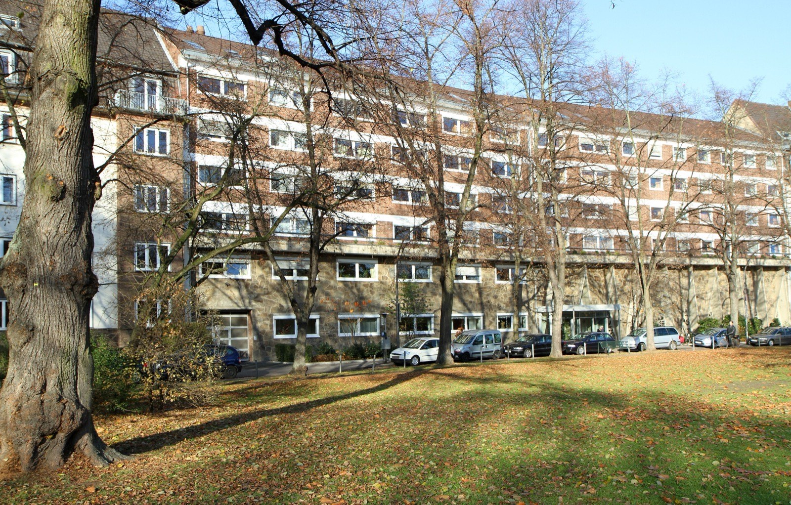
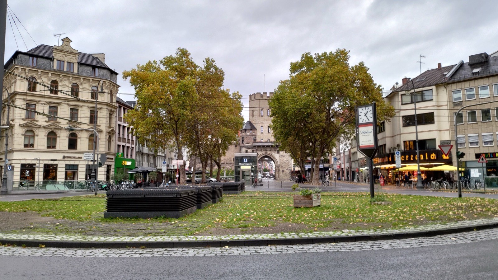

Immobilie in der Kölner Südstadt verkaufen?Nirgendwo in Köln wohnen mehr Menschen auf einem Quadratkilometer.
Neustadt-Süd ist der am dichtesten bewohnte der 86 Kölner Stadtteile. 216 beurkundete Weiterverkäufe von Wohnungen im Jahr 2025, praktisch keine Häuser — dieser Markt folgt eigenen Regeln, und die sollten Sie kennen, bevor Sie einen Preis festlegen.
Was könnte Ihre Wohnung in Neustadt-Süd erzielen?
In sechs Schritten zu einer realistischen Einschätzung. Kostenlos, unverbindlich und ohne Vertrag. Womit fangen wir an?
Andere Objektart wählen37.306 Menschen auf 2,87 Quadratkilometern
Köln hat 86 Stadtteile. In keinem davon wohnen so viele Menschen auf so wenig Fläche wie in Neustadt-Süd. Die Stadt zählt hier rund 13.000 Einwohner je Quadratkilometer — im Kölner Durchschnitt sind es 2.697. Der Stadtteil ist also fast fünfmal so dicht belegt wie die Stadt, zu der er gehört.
Das ist keine Trivialität für den Verkauf, sondern die Erklärung für fast alles, was auf dieser Seite noch folgt. Wo kein Platz mehr ist, wird nicht neu gebaut: 2025 kamen im gesamten Stadtteil 99 neue Wohnungen hinzu. Wer hier kaufen will, kauft deshalb fast zwangsläufig Bestand. Ihre Wohnung konkurriert nicht mit einem Neubauquartier um die Ecke — anders als etwa in Nippes, wo auf dem Clouth-Gelände rund tausend neue Einheiten entstanden sind.
Wer hier wohnt, wohnt meistens allein
24.451 Haushalte teilen sich 24.411 Wohnungen. Das ist ein Verhältnis von praktisch eins zu eins — es gibt keinen Leerstandspuffer. Und diese Haushalte sind klein: 68,5 Prozent bestehen aus einer einzigen Person, stadtweit sind es 51,9 Prozent. Nur 9,9 Prozent der Haushalte leben mit Kindern, in Köln insgesamt 17,7 Prozent.
Entsprechend fallen die Wohnungen aus: im Mittel 65,1 Quadratmeter, gut zwölf Quadratmeter weniger als der Kölner Wert von 77,3. Viele Eigentümer lesen das als Schwäche ihrer Wohnung. Es ist keine — es ist der Normalfall des Stadtteils.
Eine Zahl dreht das Bild sogar um: Auf den einzelnen Bewohner entfallen in Neustadt-Süd 42,6 Quadratmeter Wohnfläche, in Köln nur 40,6. Die Wohnungen sind kleiner, aber der Einzelne hat mehr Platz als anderswo — weil er ihn seltener teilt. Wer eine kompakte Zweizimmerwohnung verkauft, bedient hier also nicht einen Restmarkt, sondern den Hauptmarkt.

Ein Markt fast ohne Förderung
Noch eine Zahl, die selten jemand nennt: Nur 1,45 Prozent des Wohnungsbestands in Neustadt-Süd sind öffentlich gefördert. Stadtweit sind es 6,2 Prozent, gut das Vierfache. Der Stadtteil ist damit fast vollständig ein freifinanzierter Markt — für Käufer heißt das wenig Ausweichmöglichkeit, für Verkäufer eine stabile Nachfrage, aber auch eine Preisschwelle, an der ein Teil der Interessenten schlicht ausscheidet.
Wo liegt Ihre Wohnung im Stadtteil?
Der Grundstücksmarktbericht 2026 kennt für Neustadt-Süd zwei Wohnungssegmente mit sehr unterschiedlichen Preisen. Stellen Sie die Wohnfläche ein, um zu sehen, wie weit die beiden auseinanderliegen und wie Ihre Wohnung sich in den Stadtteil einordnet.
Der Stadtteilschnitt liegt bei 65,1 m² je Wohnung.
Abstand der beiden Segmente: 116.000 €
Beide Werte sind Durchschnitte aus beurkundeten Kaufverträgen des Jahres 2025 — 216 Weiterverkäufe und 36 Erstverkäufe nach Aufteilung. Sie sind keine Bewertung Ihrer Wohnung und auch kein Versprechen: Der höhere Wert setzt in aller Regel eine sanierte, bezugsfreie Wohnung voraus. Was Ihr Objekt tatsächlich erzielen kann, klärt die kostenlose Bewertung.
1.790 Euro Unterschied auf jedem Quadratmeter
Der Gutachterausschuss weist für Neustadt-Süd zwei Zahlen aus, die dicht nebeneinander stehen und weit auseinanderliegen. Der gewöhnliche Weiterverkauf einer Eigentumswohnung lag 2025 bei 5.766 Euro je Quadratmeter, ausgewertet aus 216 Kaufverträgen. Der Erstverkauf einer Wohnung, die zuvor aus einem Miethaus herausgelöst wurde, lag bei 7.556 Euro — aus 36 Fällen. Das sind 1.790 Euro mehr je Quadratmeter, ein Aufschlag von 31 Prozent.
Hinter dem zweiten Wert steht die Umwandlung: Ein Eigentümer teilt sein Mehrfamilienhaus nach dem Wohnungseigentumsgesetz in einzelne Eigentumswohnungen auf und verkauft sie einzeln statt das Haus als Ganzes. In einem Stadtteil mit 24.411 Wohnungen und kaum Neubau ist das einer der wenigen Wege, wie überhaupt neues Eigentum entsteht.
In Köln dürfen Sie aufteilen — anders als in Berlin oder Hamburg
Seit dem Baulandmobilisierungsgesetz können die Bundesländer über § 250 Baugesetzbuch anordnen, dass die Aufteilung eines bestehenden Wohngebäudes in Eigentumswohnungen genehmigungspflichtig wird. Der Bund hat diese Möglichkeit inzwischen bis Ende 2030 verlängert. Genutzt haben sie aber nur drei Länder: nach der Übersicht des Deutschen Notarinstituts vom 20. Januar 2026 Bayern, Berlin und Hamburg. Nordrhein-Westfalen hat keine solche Verordnung erlassen. In Köln ist die Aufteilung damit derzeit nicht nach § 250 BauGB genehmigungspflichtig.
Damit ist die Sache aber nicht erledigt, und genau hier wird es für Eigentümer in Neustadt-Süd konkret.
Der Haken sitzt im Mietrecht, nicht im Baurecht
Seit dem 1. März 2025 gilt in Nordrhein-Westfalen eine neue Mieterschutzverordnung, die statt bisher 18 nun 57 Kommunen erfasst — Köln gehört dazu. Für umgewandelte und anschließend verkaufte Wohnungen verlängert sie die Sperrfrist des § 577a BGB: Eine Kündigung wegen Eigenbedarfs oder zur wirtschaftlichen Verwertung ist erst acht Jahre nach dem Verkauf möglich statt der gesetzlichen drei. Die Regelung läuft bis zum 28. Februar 2030. Für Umwandlungen und Veräußerungen, die schon vor dem 1. März 2025 abgeschlossen waren, bleibt es nach Angaben des zuständigen Landesministeriums bei der früheren Frist.
Dazu kommt das Vorkaufsrecht des Mieters nach § 577 BGB: Wird die Wohnung nach der Aufteilung erstmals verkauft, darf der Mieter zu den Bedingungen des Kaufvertrags selbst eintreten.
Rechnen Sie diese beiden Punkte gegen die 1.790 Euro, und der Aufschlag schrumpft. Eine vermietete Wohnung, die acht Jahre lang nicht für Eigenbedarf frei wird, kauft kein Selbstnutzer — sie kauft ein Kapitalanleger, und der rechnet mit der Mietrendite, nicht mit dem Quadratmeterpreis für Selbstnutzer. Die 7.556 Euro aus der Statistik stammen deshalb überwiegend aus Fällen, in denen die Wohnung saniert und bezugsfrei übergeben wurde. Wer ein voll vermietetes Haus aufteilt und unverändert weiterverkauft, landet nicht bei diesem Wert.
Ob sich eine Aufteilung für Ihr Haus lohnt, hängt deshalb an sehr konkreten Dingen: Mieterstruktur und Restlaufzeiten, Zustand des Hauses, Aufteilungskosten für Abgeschlossenheitsbescheinigung, Teilungserklärung und Notar, und nicht zuletzt an Ihrer Steuerlast. Das ist eine Rechnung, die man einmal sauber aufmacht, bevor man sich entscheidet. Rechtlich prüfen lassen sollten Sie sie ohnehin — wir rechnen Ihnen die Marktseite vor, die juristische Seite gehört zu Notar oder Fachanwalt.
Mehrfamilienhaus in Neustadt-Süd — verkaufen oder aufteilen?
Wir rechnen beide Wege durch und sagen Ihnen, welcher bei Ihrem Objekt trägt. Kostenlos und unverbindlich.
Die amtlichen Zahlen für Neustadt-Süd
Marktdaten Köln-Neustadt-Süd
- Bodenrichtwert
- 1.650–2.140 €/m²Median 1.905 · 6 Zonen · Stichtag 1.1.2026
- Wohnung, Weiterverkauf
- 5.766 €/m²216 Kaufverträge 2025
- Wohnung, nach Aufteilung
- 7.556 €/m²36 Kaufverträge 2025
- Wohnungsbestand
- 24.411 Wohnungen65,1 m² im Schnitt · 99 Neubauten 2025
Amtliche Werte — Quellen und Methodik.
Für Häuser weist der Grundstücksmarktbericht in Neustadt-Süd keinen eigenen Durchschnitt aus. Das liegt nicht an einer Lücke in der Statistik, sondern daran, dass hier schlicht zu wenige Häuser den Besitzer wechseln, um daraus einen belastbaren Wert zu bilden. Wer ein Haus in der Südstadt verkauft, verkauft eine Ausnahme — und die bewertet man als Gesamtobjekt, nicht über einen Quadratmeterpreis.
Warum die Bodenrichtwerte hier so weit auseinandergehen
BORIS NRW weist zum 1. Januar 2026 sechs Wohnbauland-Zonen zwischen 1.650 und 2.140 Euro je Quadratmeter aus. Zwischen der günstigsten und der teuersten Zone liegen 490 Euro — knapp 30 Prozent, und das innerhalb eines Stadtteils, den man in einer halben Stunde durchquert. Ein Kölner Mittelwert hilft Ihnen an dieser Stelle nicht weiter; entscheidend ist die Zone, in der Ihr Grundstück tatsächlich liegt.
Richtwerte, kein Preisschild. Für Ihr Objekt zählt der Zustand im Detail — dafür rechnen wir kostenlos eine Wertindikation oder kommen persönlich vorbei.
Der dichteste Stadtteil ist zugleich einer der grüneren
Das klingt widersprüchlich und ist trotzdem amtlich: 16,8 Prozent der Fläche von Neustadt-Süd sind Erholungsfläche einschließlich Friedhöfen. Im Kölner Mittel sind es 11,5 Prozent. Zum Vergleich innerhalb der Innenstadt: Altstadt-Süd kommt auf 4,4 Prozent, Ehrenfeld auf 5,2.
Den Ausschlag geben der Volksgarten mit seinem Weiher und der Innere Grüngürtel, der den Stadtteil nach Westen begrenzt. Beide sind kein Beiwerk, sondern ein Teil dessen, wofür hier gezahlt wird: In einem Stadtteil, in dem die durchschnittliche Wohnung 65 Quadratmeter hat und ein eigener Garten die absolute Ausnahme ist, übernimmt der Park die Funktion des Außenbereichs.
Praktisch heißt das: Die Entfernung zum Volksgarten, zum Grüngürtel oder zum Rheinufer gehört bei einer Wohnung hier genauso ins Exposé wie Quadratmeterzahl und Baujahr. Sie ersetzt den Balkon, den viele Altbauten zur Straßenseite nicht haben.
Fünf Lagen, die sich im Verkauf unterschiedlich verhalten
Neustadt-Süd wird oft in einem Wort zusammengefasst — Südstadt. Für den Verkauf ist das zu grob. Diese Teillagen sprechen unterschiedliche Käufer an:
Rund um den Chlodwigplatz und die Severinstorburg liegt das Herzstück dessen, was Kölner als Vringsveedel kennen. Gastronomie, Einzelhandel und die Stadtbahn direkt vor der Tür — gefragt bei Käufern, die genau dieses Leben wollen. Wer eine Wohnung zur Straße verkauft, sollte die Frage nach dem Lärm nicht abwarten, sondern von sich aus beantworten: Fenster, Ausrichtung, Innenhof.
Am Rathenauplatz und in den Straßen ringsum steht viel gründerzeitlicher Altbau um einen begrünten Platz. Hier zahlen Käufer für Deckenhöhe, Stuck und Fensterproportionen — Eigenschaften, die ein Neubau nicht liefern kann und die im Exposé oft untergehen, weil sie selbstverständlich wirken.
Zwischen Volksgarten und Innerem Grüngürtel zählt die Nähe zum Grün, und zwar messbar in Gehminuten. Diese Lagen sprechen Familien und Ältere an — beides Gruppen, die im Stadtteil in der Minderheit sind und deshalb umso gezielter angesprochen werden müssen.
Am Ubierring und zur Agrippinawerft hin kommt der Rhein ins Spiel. Blickbeziehungen zum Wasser sind hier der Faktor, der zwei ansonsten vergleichbare Wohnungen weit auseinanderziehen kann.
Direkt an den Ringen — Sachsenring, Salierring, Karolingerring — steht die beste Anbindung neben der stärksten Verkehrsbelastung. Für Kapitalanleger ist das häufig gleichgültig, für Selbstnutzer selten. Wer hier verkauft, sortiert seine Interessenten am besten früh.

Ein Hinweis, der öfter für Verwirrung sorgt: Die Severinstraße selbst liegt größtenteils schon in Altstadt-Süd. Wo Ihre Immobilie genau liegt, entscheidet über die Vergleichsobjekte, die in eine Bewertung gehören — und über den Bodenrichtwert, der für sie gilt.
Auch tätig im Stadtbezirk Innenstadt und Umgebung:
Was Eigentümer in der Südstadt am häufigsten fragen
Bei 216 ausgewerteten Weiterverkäufen lag der Durchschnitt 2025 bei 5.766 Euro je Quadratmeter. Das ist eine der breitesten Datengrundlagen in ganz Köln, aber kein Preisschild für Ihre Wohnung. Etage und Aufzug, Zustand und Modernisierungsstand, Grundriss, Ausrichtung zur Straße oder zum Innenhof, Hausgeld, Erhaltungsrücklage und beschlossene Maßnahmen der Eigentümergemeinschaft verschieben den Wert erheblich — in beide Richtungen.
Nein, im Gegenteil. Die durchschnittliche Wohnung in Neustadt-Süd misst 65,1 Quadratmeter, gut zwölf weniger als im Kölner Mittel. 68,5 Prozent aller Haushalte im Stadtteil bestehen aus einer einzigen Person, nur 9,9 Prozent leben mit Kindern. Eine kompakte, gut geschnittene Wohnung trifft hier den Hauptmarkt und nicht eine Nische. Entscheidend ist der Schnitt, nicht die Zahl: Ein durchdachter Grundriss auf 58 Quadratmetern verkauft sich besser als 75 schlecht genutzte.
Die Statistik legt es nahe, die Praxis nicht immer. 2025 lagen Erstverkäufe nach Aufteilung im Stadtteil bei 7.556 Euro je Quadratmeter gegenüber 5.766 Euro im gewöhnlichen Weiterverkauf — 31 Prozent Abstand. Diese Zahl stammt aber überwiegend aus Fällen, in denen die Wohnung saniert und bezugsfrei übergeben wurde. Bei einem voll vermieteten Haus bleibt davon wenig übrig, weil der Käuferkreis auf Kapitalanleger schrumpft. Dagegen zu rechnen sind außerdem die Kosten für Abgeschlossenheitsbescheinigung, Teilungserklärung und Notar sowie Ihre steuerliche Situation. Wir rechnen Ihnen beide Wege durch, bevor Sie sich festlegen.
Nach § 250 Baugesetzbuch können Bundesländer für Gebiete mit angespanntem Wohnungsmarkt einen Genehmigungsvorbehalt anordnen. Der Bund hat diese Möglichkeit bis Ende 2030 verlängert, Gebrauch gemacht haben davon nach der Übersicht des Deutschen Notarinstituts vom 20. Januar 2026 aber nur Bayern, Berlin und Hamburg. Nordrhein-Westfalen hat keine solche Verordnung erlassen, in Köln greift dieser Genehmigungsvorbehalt derzeit also nicht. Unabhängig davon können andere Vorschriften eine Rolle spielen; lassen Sie den konkreten Fall vor der Beurkundung notariell oder anwaltlich prüfen.
Seit dem 1. März 2025 gilt in Nordrhein-Westfalen eine Mieterschutzverordnung, die 57 Kommunen erfasst, darunter Köln. Bei umgewandelten und anschließend verkauften Wohnungen ist eine Kündigung wegen Eigenbedarfs oder zur wirtschaftlichen Verwertung erst acht Jahre nach dem Verkauf möglich statt der gesetzlichen drei Jahre; die Regelung läuft bis zum 28. Februar 2030. Für den Verkauf heißt das ganz praktisch: Selbstnutzer scheiden als Käufer aus, es bleiben Kapitalanleger. Die kaufen nach Mietrendite, nicht nach dem Quadratmeterpreis für bezugsfreie Wohnungen — was den Preis drückt. War die Umwandlung samt Veräußerung schon vor dem 1. März 2025 abgeschlossen, bleibt es nach Angaben des Landesministeriums bei der früheren Frist.
Ja. Wird eine vermietete Wohnung nach der Aufteilung erstmals verkauft, steht dem Mieter nach § 577 BGB ein Vorkaufsrecht zu: Er darf zu denselben Bedingungen in den bereits geschlossenen Kaufvertrag eintreten. Das ist kein Hindernis, aber es gehört in die Planung — sowohl zeitlich als auch in der Kommunikation mit dem Käufer, der sonst überrascht wird.
BORIS NRW weist zum 1. Januar 2026 sechs Wohnbauland-Zonen zwischen 1.650 und 2.140 Euro je Quadratmeter aus, der Median liegt bei 1.905 Euro. Zwischen günstigster und teuerster Zone liegen fast 30 Prozent — innerhalb eines Stadtteils von 2,87 Quadratkilometern. Einen einheitlichen Grundstückspreis für Neustadt-Süd gibt es deshalb nicht. Hinzu kommen Zuschnitt, Bebaubarkeit, Geschossflächenzahl, vorhandene Bebauung und Baulasten.
Für Häuser weist der Grundstücksmarktbericht in Neustadt-Süd keinen eigenen Durchschnitt aus, weil zu wenige verkauft werden. Aus einer solchen Datenlage einen scheinbar exakten Quadratmeterpreis abzuleiten, wäre unseriös. Ein Haus wird hier als Gesamtobjekt bewertet: Wohnfläche und Grundstück, Baujahr und Sanierungsstand, Energieeffizienz und Heiztechnik, Grundriss, Außenflächen, Stellplätze — und die Frage, ob eine Aufteilung wirtschaftlich sinnvoller wäre als der Verkauf im Ganzen.
Größtenteils nicht. Die Severinstorburg am Chlodwigplatz markiert die Grenze: Was nördlich davon liegt, also der überwiegende Teil der Severinstraße, gehört zu Altstadt-Süd. Südlich davon beginnt Neustadt-Süd. Für eine Bewertung ist das kein Detail, denn Stadtteilgrenze heißt andere Vergleichsobjekte und ein anderer Bodenrichtwert. Wir prüfen die genaue Zuordnung anhand der Adresse, bevor wir rechnen.
Nicht in diesem Stadtteil. 16,8 Prozent der Fläche von Neustadt-Süd sind Erholungsfläche, im Kölner Mittel nur 11,5 Prozent — Volksgarten und Innerer Grüngürtel liegen direkt vor der Haustür. Für viele Käufer ersetzt das den Balkon. Wichtig ist, dass die Entfernung zum Grün im Exposé auftaucht und nicht als selbstverständlich vorausgesetzt wird. Was Deckenhöhe, Stuck und Fensterproportionen wert sind, muss ein Exposé ebenfalls ausdrücklich benennen.
Nein. Die Bewertungsanfrage ist kostenlos und unverbindlich. Durch die Anfrage entsteht kein Maklerauftrag.
Bildnachweis: Rathenauplatz mit Synagoge Roonstraße: Raimond Spekking, CC BY-SA 4.0 · Oberländer Wall 16–22: HOWI – Horsch, Willy, CC BY 3.0 · Weiher im Volksgarten: Rafael Nájera, CC0 · Chlodwigplatz: Vikimedyahesap, CC BY-SA 4.0, alle über Wikimedia Commons. Marktdaten: Gutachterausschuss für Grundstückswerte in der Stadt Köln (Grundstücksmarktbericht 2026, Berichtsjahr 2025), BORIS NRW zum 1. Januar 2026, Stadt Köln – Amt für Stadtentwicklung und Statistik (Einwohner, Haushalte und Wohnungsbestand zum 31. Dezember 2025; Stadtfläche und Bevölkerungsdichte aus den Kölner Stadtteilinformationen). Rechtsstand: § 250 BauGB nach der Übersicht des Deutschen Notarinstituts vom 20. Januar 2026, Mieterschutzverordnung NRW vom 1. März 2025. Keine Rechtsberatung.